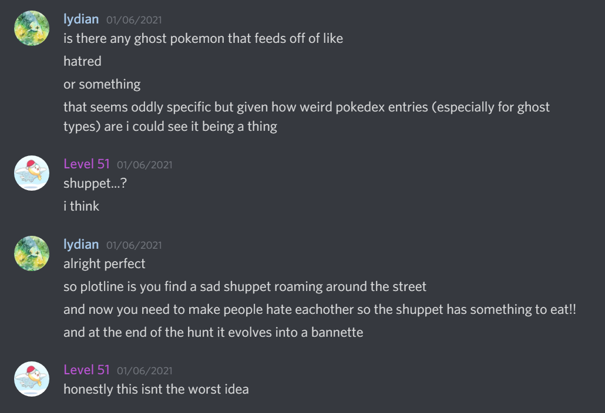
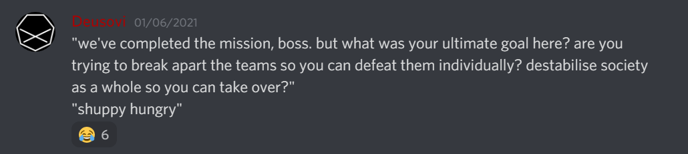

Ask Us Anything
Question categories
Story |
Hunt administration |
Hunt writing (general / specific puzzles) |
Puzzles in general |
Miscellaneous
Some questions have been edited slightly for clarity.
Story
Why Shuppy?We were struggling to think of a reason why the solvers would be helping Team Rocket, so the natural solution was just to come up with something silly. Shuppet has some very compelling Pokédex entries:
- Ruby: Shuppet is attracted by feelings of jealousy and vindictiveness. If someone develops strong feelings of vengeance, this Pokémon will appear in a swarm and line up beneath the eaves of that person's home.
- Sapphire: Shuppet grows by feeding on dark emotions, such as vengefulness and envy, in the hearts of people. It roams through cities in search of grudges that taint people.


Obviously, a few things changed over the course of the writing process, but this is how the Shuppet idea first came to be!
Was there any point to the first bit of story?
There were five (bullet) points!
No, but really, the aim there was just to introduce the theme of the hunt, in case people didn't already get it from the logo and the whole team allegiance thing.
Why are the story patch notes alphabetized?
Mostly because after I wrote them and floated the idea of patch note "story" past the rest of the team, no one noticed that the notes were alphabetized. Also, to indicate that the order isn't relevant for extraction.
Hunt administration
Who are you guys?
Our writing team comprises a bunch of people from assorted teams, so it's hard to give ourselves a short collective description apart from "the Silph writing team". The bulk of the team hunts together as Eggplant Parms in other hunts, but we also have members from ⛎ UNICODE EQUIVALENCE, ✈️✈️✈️ Galactic Trendsetters ✈️✈️✈️, and NES, as well as at least one member whose team membership is not well-defined at the moment.
What made you guys decide to switch from the Discord format to the more traditional puzzle hunt website?
The goal was always to have a website; the Discord format was meant as a temporary workaround due to problems we had with hosting and later inertia due to the Discord format being quite well-received. The ease of use of gph-site merely lowered the activation energy of moving our operations to a site sufficiently for us to make the move. It's also proven a lot more manageable in terms of operations during the hunt, like managing teams and answering hints.
The rest of the list is more of the benefits of having a site rather than reasons we moved to a site, but we now also have many more options in terms of puzzle writing. Some notable examples are Minute Details, The Minimeta That Goes Wrong, and both metapuzzles that used the grid maps on the puzzle pages. We also got to implement little touches like matching the site theme to your team of choice, as well as making the story stand out a bit more via the site—the Rocket twist would not have been very feasible to implement on a Discord bot.
How do you go about making a website for something like this? What tools do you use? I have no background knowledge of the topic and I think the site is mighty impressive. It's very professional.
This site is powered by gph-site, which did all the heavy lifting for us. We merely tweaked a few knobs here and there and threw on a few different skins. We'd highly recommend it for anyone looking to run a hunt!
If you were going to do mechanical differences for the teams, what would they have been?
Earlier on in the theme selection process, we briefly discussed puzzles that had small differences based on which team the user was in, but we couldn't find a way to implement this idea that was interesting, mechanically meaningful, and fair. Mostly unrelated to the Pokémon GO idea, we were also kicking around some ideas about a hypothetical hunt that allowed teams to select "perks'' or "boons" that would provide bonuses within the hunt, kind of like choosing which part of a tech tree to spec into. Some ideas we floated were earlier unlocks, a decrease in the wrong answer throttle, and additional hints. Ultimately we decided that we were never going to be able to balance in such a way that the perks would be equally powerful and that solvers, especially on competitive teams, would find the choice interesting and fun rather than stressful.
How did you always give such good hint responses?
Mostly by being familiar with the flow and solve paths of the puzzles and by being prepared! Before hints opened, we created a hint document with pre-written pointers for what we expected to be common choke points on the puzzles in the hunt. When hints actually came around, we were able to use these as bases for our hint responses, which we edited to suit the team's specific position in the hunt but to maintain the general idea of where the solver should be looking next.
Why the move from July? Will this be occurring every 6 months or 12?
The move from July was mostly necessitated by conflicts with other hunts, and since we had fallen a bit behind our writing schedule it was easier on us as well. If all goes well we'll be sticking to a more vague once-a-year schedule, but we have no plans as of now.
If you do more puzzle stuff in the future, where can I expect to hear about it?
We'll likely continue to advertise this hunt on the Puzzle Hunt Calendar if we run it again.
Hunt writing (general)
How many puzzles were written week of? (or day of??)
Straight From The Headlines was written the morning of the hunt. Connections, Only Geniuses Can Solve This Puzzle!!, and Whole New Ball Game were written the week of hunt. ⭐ Alliance had its first half rewritten the day before hunt.
Which puzzles changed in editing/testsolving, and how?
Some highlights:
- Harmony was originally going to be a puzzle about chess variants, but the idea was unfortunately sniped by a puzzle in another hunt early in the year. Fortunately, the author had suggested some backup ideas, including the Queen's Gambit idea, which we liked and fell back on.
- ⭐ Alliance's first half was quite strongly changed after a testsolve revealed some underlying faults in the dataset used for construction pretty close to the hunt starting. In the original version, red circles were instead red lines connecting airports to show that some flight connected the two.
- The Minimeta That Goes Wrong originally had a final meta that gave an explicit direction for extraction, but this was pointed out to be quite unthematic during testsolving, so we came up with the extraction that made it into the hunt.
Editing mostly helped to develop half-formed puzzle ideas into full puzzle structures, rather than alter fully developed ideas. Other than these, most of the other puzzles experienced pretty minor changes during testsolving, such as nerfing or cleaning up individual clues.
What were the design intentions of Round 1 puzzles vs. Round 2 puzzles?
The general idea was for Round 1 to provide a comfortable landing for less powerful teams as well as be educational to newer solvers. Most of the puzzles are structured as some immediately obtainable partial progress to get teams into the puzzle content, followed by a twist that teams must resolve, in order to invoke the idea of "well, I've seen/done the immediately obvious thing, but now what?" in solvers. We think the sense of progress is important in getting teams to feel invested in continuing or completing a puzzle, while the twist encourages solvers to take a step back and search for a pattern that explains the puzzle's "weirdness", either within or without the limits of what's given.
As for Round 2, there weren't any particular design directions communicated to the whole team, so it was mostly what puzzle authors came up with. We generally assigned Round 2 answers to harder puzzle ideas, which were generally more involved and had more steps to them. Many puzzles here are less clearly structured to give solvers easy ins, and often require stronger insights up front, like White as a Sheet or Six Feet Under.
Were there plans at any stage to overlay the Pokémon strength / weakness chart on the Go board, given that they're the same size (18 squares / 19 lines)? I was sure that one of the metas would feature that particular Pokémon Go combo, but of course it didn't happen.
There were no plans for that—honestly, we didn't even notice it! It seems like it could've been doable, but it would be hard to do "naturally". We would have to find a way to work around the lack of a canonical ordering for the types.
When did the first concept of tying Go to Pokémon GO come around? How quickly does that evolve into a full-fledged structure concept? Curious as to the very beginnings and initial creation of a puzzle hunt. Was any of this planned or worked on before Smogon last year?
The concept of tying Go to Pokémon GO wasn't the original impetus for designing a hunt around the theme; we joked about it in passing soon after the theme was suggested, but it only came up seriously while brainstorming ideas for metas.
The beginnings and initial creation of a hunt, at least in our workflow, are pretty straightforward since none of us are particularly strongly-opinionated people when it comes to theme. We usually have one pretty generic idea and a few other ideas that are more closely tied to weird meta structures, which get discussed more. In the case that people aren't really convinced, we have a nice generic theme to write a pretty standard-looking hunt around, as was the case this year.
As for the general timeline for this hunt, it was pretty cleanly disjoint from last year's hunt, since we absolutely do not have the capacity to work on two hunts of this size at once. (Arguably, we don't have the capacity to work on one hunt of this size at once!)
Was there anything that went wrong behind the scenes?
Many, many things went wrong behind the scenes. The small size of our writing team and the relative inexperience of several writers meant that we struggled to generate enough puzzle ideas to fill the hunt; as hunt drew nearer, some writers realized they would not be able to complete their puzzles and opted to drop the ideas to reserve them for future use. At some point, we earnestly considered having a puzzle in the middle of the second round which encouraged solvers to rest, stretch, and drink water, then come back in 5 minutes for a free answer.
Additionally, conflicts in scheduling meant that testsolve sessions often had less testing power than necessary, and testsolvers often solved puzzles solo or in pairs, leading to struggles on some harder puzzles. In many cases, we opted to take the safer route by nerfing or otherwise smoothing out the stickier parts of the puzzles, even if we thought they were more approachable in larger teams.
Do you personally think this hunt was more difficult than the one last year that was still connected to Smogon?
At least with reference to puzzles in the second round, we generally agree that this hunt's harder puzzles were easier than last year's and that its easier puzzles were harder than last year's, so the window of puzzle difficulties is just narrower. But since the easier puzzles are the ones that most teams solve and that arguably have the most impact on teams' experiences, we expected the general perception to be that this hunt ran somewhat harder than last year's.
This hunt was much harder than Smogon Puzzle Hunt 3. And the puzzles were significantly less Pokémon-themed. Is this a direction you see SPH continuing in the future? Do you expect SPH to be similarly sized if it runs again?
We're definitely planning to scale down, at least in terms of puzzle quantity, if we run this again. While it was very rewarding seeing everyone enjoy the puzzles, the hunt took a lot out of us. Naturally, fewer puzzles will mean a less difficult hunt, though we think the general difficulty of individual puzzles will likely remain around this difficulty. This is the main or only hunt most of us write for each year, so it's typically the one we save our standout ideas for.
We don't think the puzzles were significantly less Pokémon-themed. This year, we had two puzzles that specifically relied on datasets from the Pokémon games and a third that used a piece of Pokémon-related media. Last year's hunt can be characterized in exactly the same way.
Is it a rule between puzzle hunt developers to always Rickroll players when possible?
Not specifically, but the general principles of humor we employed are generally the same as in other hunts. There's a pretty good explanation of some elements we tried to develop and utilize in this article.
Rank the writers of this hunt by deviousness in puzzle-writing. Just so I know who to watch out for next Silph.
rf: Was there anybody (besides me, who wrote 0 puzzles) who didn't have a devious-in-some-way puzzle to their name?
lydian: Obviously Deusovi is the most devious, but I hope my puzzles had some ":)" moments as well!
Could Level 51 share the blueprints of their time machine? There is no way someone can create so many puzzles with only 24 hours in a day, and I also always have too much to do.
Thanks for noticing, haha. I actually worked on this hunt over the entire year, which is where the time came from. I'm a full-time student at the moment, which means I also definitely have more free time than a typical working adult. A rough estimate suggests that I spent over 1500 hours on this hunt, across coordinating writing efforts and organizing testsolves, workshopping and constructing my own puzzles, doing editing work and providing feedback on other puzzles, working on the site, and testsolving the three puzzles I somehow didn't get spoiled on. Is 1500/8760 a big proportion? You decide!
Hunt writing (specific puzzles)
Were you able to construct Medal Ceremony by hand, or did it require web scraping?
It was pretty easy to construct by hand. This Wikipedia page came in very handy.
Be honest with us: how last minute was Six Feet Under actually written?
Actually, this was the first non-meta puzzle I conceptualized for this hunt, and one of the first I finished writing. I think the reason it sounds so desperate is that I was busy reliving the memories of the last hunt we ran.
On Composition, why were there only 31 soup cans instead of 32?
The idea was to nest successive paintings approximately in the top-right corners of their parent paintings. For most paintings, there was nothing there to get in the way of the next painting, but unfortunately, we had to nest over one of the soup cans in the Warhol. In retrospect, maybe we should've just squished one of the cans and nested the next painting on top of it, or something.
How difficult was Re-actions to construct, and how did you go about doing it?
It wasn't actually that difficult to construct—the only strict constraint on each clue is that it has to have a certain number of words. We accounted for this in gridding by starting with easily-constructible words in the lights after the short ones: UNDERGRAD, METALLICA, EARLIEST, and LACERATED were our seed entries. (This posed next to no issues—turns out blocked grids are more lenient than either of us realized!)
For the actual clues, we mostly wrote runs of 4-8 clues at once; each time we started a new run, we'd decide on the wordplay for the clue before it. This meant that for every clue, we could see how it would look when fragmented: we wanted the fragments to read as sensibly as possible (...for the most part; a few "obviously wrong" ones were intentionally put in there to hint that they wouldn't form clues as-is).
To help the fragments make sense, we didn't decide on what the actual dropped words would be until all the clues were written. So the only other thing we had to keep in mind was that we had the right set of dropped letters. We wrote down the ones we needed and crossed them off as we wrote clues. Using the hard letters (like Q and Z) early, it was easy to fiddle around with the few we had left at the end to get everything into place.
How did you get the idea for the cursed subpuzzles in Minimeta?
In many cases, I thought about ways that search tools could exploit some interesting constraints of puzzles, like the limited range of possible answers in Original Content or the big random anagram in Word Search. Some of the other ones were just jokes that I'd had somewhere in my mind for a while and now had a chance to put into a puzzle, like Crossword and Extremely Hard Programming Puzzle. Finally, for others, I just thought about what a "minimeta that goes wrong" would look like, which gave me Rebus, Capital Letters, and Text Adventure.
Tell me about the constructions for Overdone, Chimera, and RED SUS! Did you write custom solvers to construct them?
Level 51: For Overdone, I selected words that both clearly clued ordered sets and were also simple enough to realistically be the result of some transformation, then sat around and thought about some transformations I could use, and just... tried stuff until I managed to fit transformations to words. For the remaining ones, it was not super difficult to just find similar-looking phrases or words and use the power of Caesar shift values to tweak from one to the other (this is how REINVENT THE WHEEL / REINDEER was created). I wrote a little bit of custom code to try different Caesar shift values for ZODIAC, and then inspected the results by hand and found MAIDOF in there.
lovemathboy: For Chimera and RED SUS, nope! The method I use (that I think most logic puzzle constructors use) is to first plan out where you want all your clues to be (i.e. placing a bunch of blank clues with symmetry). Then, every time you replace a blank clue with an actual clue, you make as many deductions as possible. Keep repeating that step until you only have a few clues left, then just tweak the remaining clues until the puzzle is unique. This method of construction guarantees that there’s a logical way through the puzzle. (Also, usually at the start, puzzle constructors will have a “break-in” they want to use, which is where they intend solvers to start the puzzle).
Puzzles in general
Have you noticed that Pokémon games also like to include some puzzly elements like ciphers or mysteries?
lydian: Yeah, the games have some cool stuff, like Braille writing in places like the Dotted Hole and Sealed Chamber and the palindrome passwords to enter the Rocket Warehouse. There's also more logic-y stuff like ice puzzles and Voltorb Flip!
Do you want your puzzles to have millions of solvers?
mstang: I think society would be very different if that were possible.
lydian: Only if they exclusively compliment my puzzles :)
Deusovi: I don't think I could comprehend "millions of people"—the human brain just isn't equipped to handle that kind of thing. "Thousands of solvers" and "millions of solvers" both just get visualized as "big number". I definitely want a lot of people to enjoy my puzzles, though!
How do I get good at metas, extraction, cryptics, and not overthinking everything?
Deusovi: What typically helps me with metas and extraction is trying to see things from the other side: "if I was a constructor, why would I have done things this way?" Specifically, looking for unused information, especially unused information that seems more awkward than it needs to be.
For cryptics, probably just practice—some puzzle sources I'd recommend, in increasing order of difficulty: Kegler, The Guardian quiptics, Hex (Cox and Rathvon), Ucaoimhu.
For not overthinking everything... I'll let you know when I figure that one out.
Miscellaneous
What are your favorite Pokémon?
lydian: Alolan Raichu :)
lovemathboy: Shaymin!
beta: Grovyle (⌐■_■)
Level 51: Togekiss! :D
How do you sleep at night? (general question)
beta: melatonin helps (a small dose like 0.3mg if possible, but it’s hard to find doses less than 0.5mg)
lydian: well yes, but actually no
Deusovi: poorly
mstang: I recently got a weighted blanket which has helped, but in general see lydian's answer
lovemathboy: hugging plushies works well
Who hurt you?
Level 51: People who give feedback on puzzles they don't solve.
lydian: People who think Shaymin "isn't that great".
Level 51: I mean it's "okay" imo
lydian: case in point, Level 51 just hurt me!
Which Pokémon GO teams are you on?
lydian: Mystic :)
beta: Instinct
lovemathboy: Mystic.
rf: Instinct
Deusovi: Mystic, for the two days(?) I played it.
Level 51: Is there seriously no one else on this writing team on Valor???
mstang: ...oh this hunt was about Pokémon GO??
Do any of you play Go?
beta: poorly
rf: ditto ^
What generation do you think we'll get Black 3 and White 3?
lydian: Polynomial interpolation tells us the Black and White remakes should happen in generation 9. However, this approach would mean Pokémon Z will happen in this generation; that Master Sun and Master Moon should have happened in generation 4; and lastly, that Pokémon Gun will show up in generation -4 (maybe after enough generations, the generation count underflows?). So yeah, polynomial interpolation may be a bit of a dubious method.
What is the weather like there?
lydian: Hot and humid :(
Level 51: Hot and humid as well, except I live like halfway across the world from lydian. Just equator things, I guess.
Loved the drawings of the team leaders and Giovanni! Props to the artist. What programs did you use?
Level 51: The team leader art is actually official Pokémon GO art; Giovanni and the phone in Round 1 were drawn to approximate a similar art style by a mysterious artist who declined to be credited using, as far as I can tell, just Photoshop and a tablet.
What's your favourite Olympic mascot?
lydian: As a Brazilian, I think I'm contractually bound to say Tom, with Vinicius coming in second; they represent a very important part of Brazilian culture, and I for one love so much of Tom Jobim's music. Also they just look really cool, especially Tom. Honorable mention goes to the Fuwa: Beibei, Jingjing, Huanhuan, Yingying, and Nini, as I had a plushie of Huanhuan as a kid, they're all very cute (especially their names), and I ADORE how they tie in the five Olympic rings with the Wuxing. Just really really nice and cute. Finally, Amik, because they're a gay beaver, like, what else do you want from an Olympic mascot??!!
Favorite trainer type?
Level 51: Is this, like, trainer class? Like in the Pokémon games? I think it's neat that "Double Team" is both a trainer class and a move name. (Also "Psychic", less interestingly.)
lydian: If it is indeed about trainer classes, Scuba Diver!
If you had to live in a Poké Ball, which one would you choose and why?
lydian: Lure Ball, I like the color scheme!
Level 51: Canonically, I think the most obvious answer should be the Luxury Ball, since it's the nicest to live in.
Favourite eeveelution?
lydian: Vaporeon! But I love them all <3
lovemathboy: Espeon!
How many Pokémon can you name without looking them up (approximately)? Can you do the Perfect PokéRap?
lydian: I tried naming as many of them as I could on just a blank txt file (to avoid using one of these quizzes that show the Pokémon in their dex position, so I couldn't infer anything). The rules I gave myself were to name as many as I could until I'd spent 3 minutes without being able to name any more, which got me to 797 Pokémon in a total of 70 minutes. Nice! I'm very curious to see which ones I've missed, but I just spent the last hour and a bit naming Pokémon, so I think I'll save that for later, lol.
Level 51: I could probably name like 200 if you gave me a notepad and an hour. What the heck lyd??
lydian: :)
Who is your favorite VTuber?
Level 51: I don't actually watch any VTubers but Mori has a cool scythe.
Favorite Pokémon not-GO side game?
lydian: Has to be Mystery Dungeon, I think. I played them as a kid and got stuck so I don't remember them very well, but I do remember them very fondly, and that's what counts, right? Plus, the only other spin-off I've played is Pokémon Rumble Blast, which was fun, but nowhere near Mystery Dungeon.
lovemathboy: My all-time favorite game is Pokémon Mystery Dungeon: Explorers of Sky! Though I must say all of the Pokémon side games are really fun and worth playing.
beta: ↑
{kind=link}
What was your favorite team name?
lydian: ፨ ETHIOPIC SEPARATOR REGISTEEL FACE (with \ KAKTOVIK NUMERAL ARCTIC UNO as a close second)
Level 51: I quite like 𝗲. Also, not really a team name, but the team member lineup for 1 Billion Puzzles vs 1 of Every Pokemon is very cute.